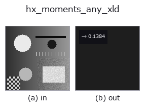

halcon_ext op• データ種: contour → feature
• 呼び出し: fullseye.apply(img, "hx_moments_any_xld", a=0.5, b=0.5) (2-D は 1 画像 + 2 スカラつまみ a,b∈[0,1] のモデル)
• HALCON 相当: moments_any_xld(意味・パラメータは HALCON リファレンスが参考になる)

*図は合成の入力 128×128 で実際に走らせた出力。左が入力、右が出力。点群は上から見た散布(明るさ = z)、1-D 列は折れ線、体積は z 方向の最大値投影、動画は中央フレーム、複素画像は振幅、絵にならない返り値は値そのもの。*
*つまみ a は出力を変えない(実測: 0.1 / 0.5 / 0.9 で同一)。*
*つまみ b は出力を変えない(実測: 0.1 / 0.5 / 0.9 で同一)。*
段階(前置きの op → この op。左から順):
▸ hx_moments_any_xld: stages (docs site)
全 contour 点の 2 次中心モーメント(広がり)を返す(正規化 feature)。
contour dict の全点をまとめ、重心からの二乗距離の平均 `mean((row - mean_row)^2 + (col - mean_col)^2)`
(2 次中心モーメント `mu20 + mu02 を点数で割ったもの)を max(H, W)^2` で割り、1 で頭打ちした
`np.float64` で返す。
• `a, b` は未使用。
• 点が 2 個未満なら 0.0。
「点群が重心からどれだけ広がっているか」の等方的な指標で、向きや縦横比は含まない。輪郭の点密度に依存するので、
同じ図形でも点の刻みが不均一だと値が変わる。向き付きの慣性(長軸・短軸)は `hx_fit_ellipse_contour` /
`elliptic_axis_xld、region の 2 次モーメントは moments_region_2nd`。
• gallery2d_halcon_ext ファミリ ガイド
• サンプルデータ カタログ(DL URL / ライセンス) — 2-D は skimage.data(BSD/public)+ 合成、3-D は実データ源(Stanford/PDS 等)の DL URL。
• 演算子の来歴・参考文献 — この op 族の元になった研究/手法の出典。
• アルゴリズムの正典(著者・年)と用途は上記ファミリ使い方ガイドに記載。
下のプログラムは実際に走ることを確かめてある(図と同じ入力)。Studio のヘルプではこのブロックがボタンになり、その場で読み込んで実行できる。
threshold 0.50 0.50 sk_find_contours 0.50 0.50 hx_moments_any_xld 0.50 0.50
▸ Load this pipeline · Load & run
• gallery2d_halcon_ext — py -3.11 examples/gallery2d_halcon_ext.py
feature を入力に取れる)halcon_ext)hx_gen_circle · hx_gen_ellipse · hx_gen_rectangle2 · hx_gen_checker_region · hx_gen_grid_region · hx_gabor · hx_fit_surface1 · hx_fit_surface2
*Provenance: ops.py — 2D operator registry. この per-op ノートは tools/opdocs.py md が自動生成(手編集しない)。*
© 2026 Kazufumi Furuse — Fullseye operator documentation. Licensed under Apache-2.0.
{kind=link}